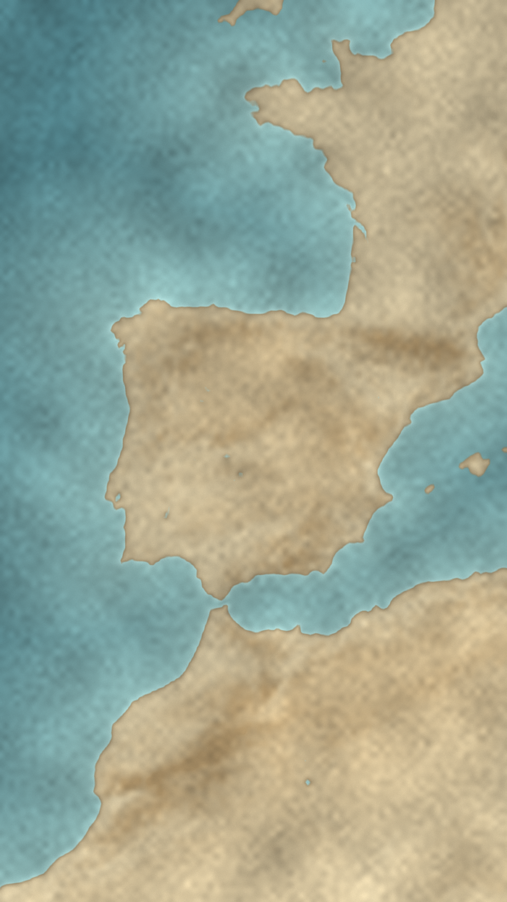

<!doctype html>
<html lang="ru">
<head>
<meta charset="utf-8">
<title>Map story — 7 s test</title>
<style>
@font-face{font-family:'Cormorant Garamond';font-weight:700;src:url(fonts/cormorant-garamond-cyrillic-700-normal.woff2) format('woff2');unicode-range:U+0400-045F,U+0490-0491,U+04B0-04B1,U+2116}
@font-face{font-family:'Cormorant Garamond';font-weight:700;src:url(fonts/cormorant-garamond-latin-700-normal.woff2) format('woff2');unicode-range:U+0000-00FF,U+2000-206F}
*{box-sizing:border-box;margin:0;padding:0}
html,body{width:1080px;height:1920px;overflow:hidden;background:#f1f2f6}
body{font-family:'Inter Display','Inter',sans-serif;-webkit-font-smoothing:antialiased;color:#111218}
.abs{position:absolute}
.mono{font-family:'DejaVu Sans Mono',monospace}
.ctr{position:absolute;transform:translate(-50%,-50%);white-space:nowrap;text-align:center}
.pill{position:absolute;border-radius:999px;display:flex;align-items:center;justify-content:center;white-space:nowrap;background:rgba(255,255,255,.95);border:1.5px solid #fff;box-shadow:0 14px 30px -14px rgba(10,20,40,.45);transform:translate(-50%,-50%)}
.card{position:absolute;border-radius:40px;background:#fff;box-shadow:0 40px 80px -36px rgba(10,20,40,.6),0 10px 24px -12px rgba(10,20,40,.25)}
.chip{display:inline-flex;align-items:center;gap:12px;white-space:nowrap;padding:10px 24px;border-radius:999px;background:#fff;font-weight:800;letter-spacing:.04em;box-shadow:0 14px 28px -12px rgba(10,20,40,.5)}
.blue{color:#2f7bf5}
.sub{position:absolute;left:540px;transform:translate(-50%,-50%);padding:16px 34px;border-radius:999px;background:rgba(255,255,255,.96);font-weight:700;font-size:37px;letter-spacing:-.01em;white-space:nowrap;box-shadow:0 16px 34px -16px rgba(10,20,40,.55)}
.subw{position:absolute;left:540px;transform:translate(-50%,-50%);white-space:nowrap;font-weight:700;font-size:58px;letter-spacing:-.01em;color:#fff;text-shadow:0 3px 0 rgba(0,0,0,.25),0 4px 18px rgba(0,0,0,.55)}
.plate{position:absolute;left:0;top:0;width:1080px;height:1920px}
svg{display:block}
</style>
</head>
<body>
<div id="cam" class="abs" style="inset:0;transform-origin:540px 900px"><div id="root" class="abs" style="inset:0"></div></div>
<script src="lib/d3-array.min.js"></script>
<script src="lib/d3-geo.min.js"></script>
<script src="lib/topojson-client.min.js"></script>
<script src="lib/world50m.js"></script>
<script src="plates/plates.js"></script>
<script src="icons.js"></script>
<script src="characters2.js"></script>
<script>
const V=(location.hash||'#R1').slice(1);
const ROOT=document.getElementById('root');
const BLUE='#2f7bf5',ORANGE='#f08a24',INK='#2a2118';
const countries=topojson.feature(WORLD,WORLD.objects.countries).features.filter(c=>c.id!=='010');
const byId=id=>countries.find(c=>c.id===id);
const MIDEAST=new Set(['682','887','512','784','634','414','368','400','376','760','422','364','792','275','048','196']);
const html=s=>{const d=document.createElement('div');d.innerHTML=s.trim();const e=d.firstChild;ROOT.appendChild(e);return e};
const proj=name=>{const P=PLATES[name];return d3.geoMercator().scale(P.k).translate([P.tx,P.ty])};
function counter(n){const sl=[0,1,2,3,4,5].map(k=>`<span style="font-style:italic;color:${k<n?BLUE:'#c6cbdb'}">/</span>`).join('');
  html(`<div class="pill" style="left:540px;top:150px;height:70px;padding:0 30px;gap:20px;font-weight:800;font-size:31px;letter-spacing:.04em"><span>CHAPTER ${n} OF 6</span><span class="mono" style="font-size:37px;letter-spacing:-.04em;font-weight:700">${sl}</span></div>`)}
const at=(x,y,inner,extra='')=>html(`<div class="abs" style="left:${x}px;top:${y}px;${extra}">${inner}</div>`);
// smooth curve through projected points (Catmull-Rom → cubic Bézier)
function smooth(pts){let d=`M${pts[0][0]},${pts[0][1]}`;for(let i=0;i<pts.length-1;i++){const p0=pts[i-1]||pts[i],p1=pts[i],p2=pts[i+1],p3=pts[i+2]||p2;
  d+=` C${p1[0]+(p2[0]-p0[0])/6},${p1[1]+(p2[1]-p0[1])/6} ${p2[0]-(p3[0]-p1[0])/6},${p2[1]-(p3[1]-p1[1])/6} ${p2[0]},${p2[1]}`}return d}


// ───────────── 7 s test: Lisbon vs Castile (deterministic renderAt(t), 60 fps)
const FPS=60,DUR=7,clamp=(v,a=0,b=1)=>Math.min(b,Math.max(a,v));
const eo=p=>1-Math.pow(1-p,3),eio=p=>p<.5?4*p*p*p:1-Math.pow(-2*p+2,3)/2;
const eb=p=>{const c1=1.7,c3=c1+1;return 1+c3*Math.pow(p-1,3)+c1*Math.pow(p-1,2)};
const seg=(t,a,b)=>clamp((t-a)/(b-a));
const $=id=>document.getElementById(id);

at(0,0,'');
const pr=proj('iberia'),path=d3.geoPath(pr);
html(`<svg class="abs" style="left:0;top:0" width="1080" height="1920">
 <g style="mix-blend-mode:multiply"><path id="fES" d="${path(byId('724'))}" fill="#e3822b" opacity="0"/><path id="fPT" d="${path(byId('620'))}" fill="#2f4fd1" opacity="0"/></g>
 <path id="oPT" d="${path(byId('620'))}" fill="none" stroke="#1a1f3a" stroke-width="3" opacity="0"/><path id="oES" d="${path(byId('724'))}" fill="none" stroke="#3a2412" stroke-width="2.5" opacity="0"/></svg>`);
// easel + its map lines (old line stays as a ghost, the red one slides west)
const EX=300,EY=170,LX0=306*.5-10,LX1=LX0-64;
const easel=at(EX,EY,PROP.easel('plates/treaty_hist.png',-20,-250,.85,540),'transform-origin:50% 100%');
const elines=html(`<svg class="abs" style="left:${EX+25.5}px;top:${EY+17}px;overflow:visible" width="425" height="315">
  <path id="ghost" d="M${LX0} 0 V315" stroke="#fff" stroke-width="4" stroke-dasharray="10 9" opacity="0"/>
  <path id="arrow" d="M${LX0-8} 160 H${LX1+14}" stroke="#c4342d" stroke-width="5" stroke-linecap="round" opacity="0"/>
  <path id="arrowH" d="M${LX1+26} 148 L${LX1+12} 160 L${LX1+26} 172" stroke="#c4342d" stroke-width="5" fill="none" stroke-linecap="round" stroke-linejoin="round" opacity="0"/>
  <path id="rline" d="M${LX0} 0 V315" stroke="#c4342d" stroke-width="6" stroke-dasharray="16 9"/></svg>`);
// cast (box 260×360, feet at y 340 of the box)
const mk=(fn,x,y,s)=>{const e=at(x,y,fn(s),`transform-origin:${130*s}px ${340*s}px`);e.s=s;e.eyes=e.querySelector('.eyes');return e};
const FER=mk(CAST2.ferdinand,560,860,1.1),ISA=mk(CAST2.isabella,740,900,1.05),JOA=mk(CAST2.joao,130,880,1.15);
// anger mark above João
const ANG=at(130+225,880-10,`<svg width="130" height="130" viewBox="-45 -45 90 90">${[0,90,180,270].map(r=>`<path transform="rotate(${r})" d="M8 -30 Q8 -10 28 -8" stroke="#d62828" stroke-width="8" fill="none" stroke-linecap="round"/>`).join('')}</svg>`,'transform-origin:65px 65px;opacity:0');
// subtitles: words appear one by one
const SUBS=[{t0:2.4,t1:3.9,txt:"Portugal wasn't happy"},{t0:4.05,t1:6.75,txt:'and demands to move the line'}].map(s=>{const e=html(`<div class="subw" style="top:1500px"></div>`);
  s.words=s.txt.split(' ');e.innerHTML=s.words.map(w=>`<span style="display:inline-block;margin:0 .13em">${w}</span>`).join('');s.el=e;s.spans=[...e.children];return s});

function pop(e,t,t0,breathPh){const p=seg(t,t0,t0+.55);if(t<t0){e.style.opacity=0;return}
  e.style.opacity=1;const drop=(1-eo(clamp(p/.45)))*-320;
  const land=clamp((p-.42)/.58),sq=Math.sin(land*Math.PI)*(1-land)*.9;   // squash on landing, settle
  const br=Math.sin((t-t0)*Math.PI*2*.55+breathPh)*.012*clamp((t-t0-.6)/.5);
  return {ty:drop,sx:1+sq*.18-br*.5,sy:1-sq*.2+br}}
function place(e,st,extra=''){if(!st)return;e.style.transform=`translateY(${st.ty}px) ${extra} scale(${st.sx},${st.sy})`}
function blink(e,t,times,look=0){let k=1;times.forEach(b=>{const d=Math.abs(t-b);if(d<.07)k=Math.min(k,.12+d/.07*.88)});e.eyes.style.transform=`translateX(${look}px) scaleY(${k})`}

function renderAt(t){
  // camera: settle-in push, then a slow creep toward the easel
  const cz=1.1-.1*eo(seg(t,0,1.4))+.035*eio(seg(t,3.8,7));$('cam').style.transform=`translateY(${-40*eio(seg(t,3.8,7))}px) scale(${cz})`;
  // countries fill in
  const fs=eo(seg(t,.15,.85)),fp=eo(seg(t,.4,1.1));$('fES').setAttribute('opacity',.85*fs);$('oES').setAttribute('opacity',.55*fs);$('fPT').setAttribute('opacity',.95*fp);$('oPT').setAttribute('opacity',.7*fp);
  // easel rises
  const ep=seg(t,.55,1.3);easel.style.opacity=eo(clamp(ep*2));easel.style.transform=`translateY(${(1-eb(ep))*140}px)`;elines.style.opacity=eo(clamp(ep*2));
  // cast drops in
  const f=pop(FER,t,1.0,0),i=pop(ISA,t,1.22,1.7);place(FER,f);place(ISA,i);
  const j=pop(JOA,t,1.75,.8);
  // João: angry shake 2.75–3.6, then leans toward the easel while the line slides
  const sh=seg(t,2.75,3.6),shake=t>2.75&&t<3.6?Math.sin(t*95)*14*(1-sh):0;
  const lean=eio(seg(t,4.2,4.8))*(1-eio(seg(t,6.1,6.6)));
  if(j){j.sy*=1+.04*Math.sin(sh*Math.PI)*(t<3.6&&t>2.75?1:0);place(JOA,j,`translateX(${shake+lean*18}px) rotate(${lean*6}deg)`)}
  const ap=seg(t,2.85,3.15),ao=1-seg(t,3.9,4.15);ANG.style.opacity=t<2.85?0:clamp(ap*3)*ao;ANG.style.transform=`scale(${eb(ap)*(1+.08*Math.sin(t*20))})`;
  // the line moves west
  const lm=eio(seg(t,4.45,5.6));$('rline').setAttribute('d',`M${LX0+(LX1-LX0)*lm} 0 V315`);
  $('ghost').setAttribute('opacity',.85*clamp(lm*3));const ar=seg(t,4.5,5.6);$('arrow').setAttribute('opacity',clamp(ar*4)*(1-seg(t,6.2,6.6)));$('arrowH').setAttribute('opacity',clamp(ar*4)*(1-seg(t,6.2,6.6)));
  $('arrow').setAttribute('d',`M${LX0-8} 160 H${LX0-8+(LX1+14-LX0+8)*lm}`);$('arrowH').setAttribute('transform',`translate(${(LX1-LX0)*(lm-1)} 0)`);
  // eyes: monarchs glance at João while he fumes, everyone blinks
  const g=-7*eio(seg(t,2.9,3.2))*(1-eio(seg(t,3.9,4.2)));
  blink(FER,t,[2.2,5.3],g);blink(ISA,t,[2.45,6.0],g);blink(JOA,t,[2.5,5.9],0);
  // subtitles
  SUBS.forEach(s=>{const on=t>=s.t0&&t<s.t1+.25;s.el.style.opacity=on?1-seg(t,s.t1,s.t1+.25):0;
    s.spans.forEach((w,k)=>{const p=eo(seg(t,s.t0+k*.12,s.t0+k*.12+.22));w.style.opacity=p;w.style.transform=`translateY(${(1-p)*16}px)`})});
}
window.renderAt=renderAt;window.DUR=DUR;
window.SFX=[{t:1.0+.25,type:'pop'},{t:1.22+.25,type:'pop'},{t:1.75+.25,type:'pop2'},{t:.55,type:'whoosh'},{t:2.75,type:'grr'},{t:2.85,type:'ping'},{t:4.45,type:'slide'},{t:5.6,type:'tap'}];
document.fonts.load('700 30px "Cormorant Garamond"').then(()=>Promise.all([...document.images].map(i=>i.decode()))).then(()=>{renderAt(0);window.ready=true});
</script>
</body>
</html>
